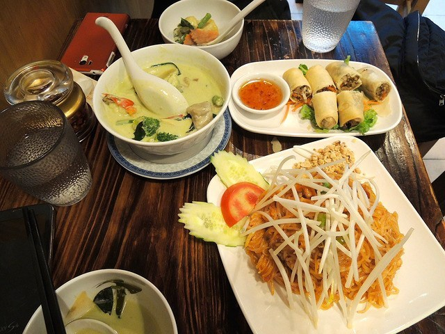
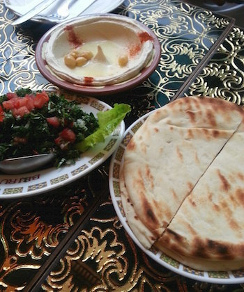
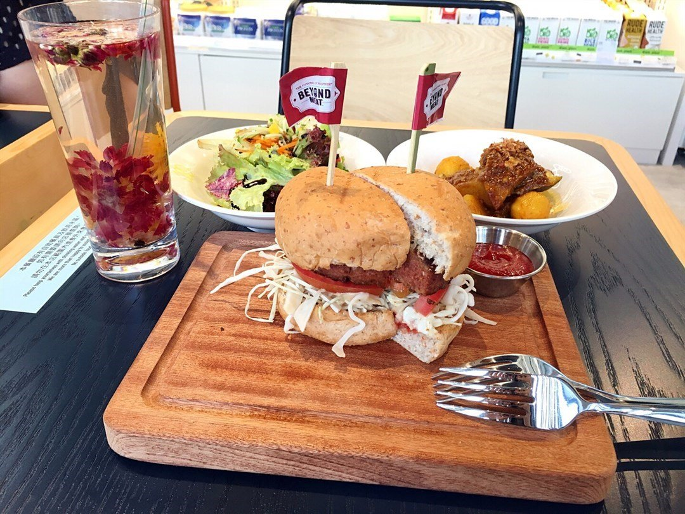

Other Cuisines
These are some of my favourite non-Chinese restaurants in Hong Kong which are either all vegetarian/vegan, or have good options for those diets.
Thai Vegetarian Food
Kowloon City, Kowloon
Beirut
Lan Kwai Fong, Hong Kong Island
Green Common
Multiple locations, Hong Kong Island
